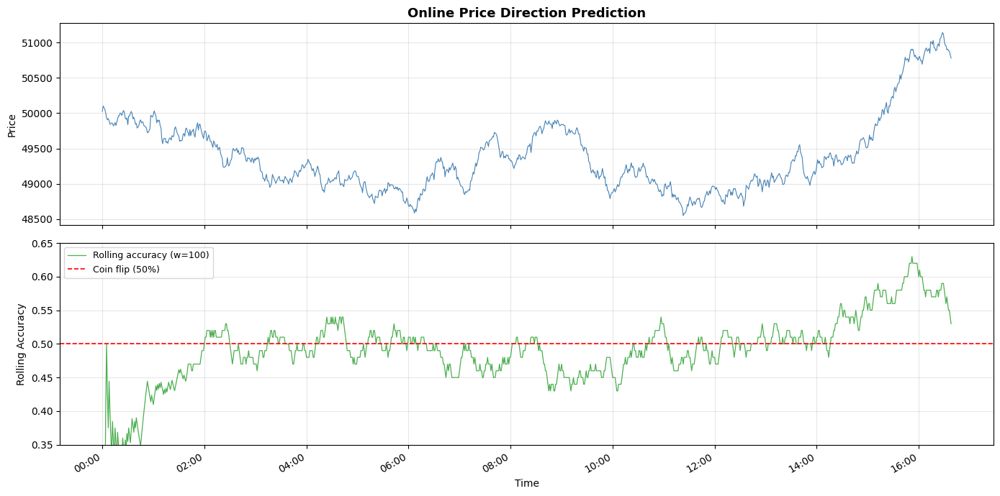

Feature extraction¶
This recipe shows how to engineer features for online machine learning. We'll use a price prediction task as a running example: given OHLCV candle data, can we predict whether the next candle closes higher or lower?
Along the way we'll cover River's core feature extraction tools: compose.FuncTransformer, feature_extraction.Agg, streaming statistics, and how to use TA-Lib's streaming API inside a River pipeline.
Fetching data¶
We'll generate synthetic 1-minute OHLCV candle data using geometric Brownian motion to simulate realistic price movements.
import numpy as np
import pandas as pd
rng = np.random.RandomState(42)
n_candles = 1000
price = 50_000.0
rows = []
ts = pd.Timestamp("2026-01-01")
for _ in range(n_candles):
ret = rng.normal(0, 0.001)
o = price
c = o * (1 + ret)
h = max(o, c) * (1 + abs(rng.normal(0, 0.0005)))
l = min(o, c) * (1 - abs(rng.normal(0, 0.0005)))
vol = rng.exponential(10)
rows.append([ts, o, h, l, c, vol])
price = c
ts += pd.Timedelta(minutes=1)
df = pd.DataFrame(rows, columns=["timestamp", "open", "high", "low", "close", "volume"])
# Target: did the next candle close higher?
df["target"] = (df["close"].shift(-1) > df["close"]).astype(int)
df = df.iloc[:-1] # drop last row (no future candle)
print(f"Generated {len(df)} candles")
df.head()
Generated 999 candles
| timestamp | open | high | low | close | volume | target | |
|---|---|---|---|---|---|---|---|
| 0 | 2026-01-01 00:00:00 | 50000.000000 | 50028.294032 | 49983.807787 | 50024.835708 | 1.696249 | 1 |
| 1 | 2026-01-01 00:01:00 | 50024.835708 | 50108.015153 | 49999.560277 | 50101.025026 | 12.312501 | 0 |
| 2 | 2026-01-01 00:02:00 | 50101.025026 | 50114.616433 | 50065.900477 | 50077.503878 | 3.627537 | 0 |
| 3 | 2026-01-01 00:03:00 | 50077.503878 | 50142.918845 | 50030.396306 | 50054.181294 | 3.442230 | 0 |
| 4 | 2026-01-01 00:04:00 | 50054.181294 | 50062.045991 | 49980.782678 | 50003.484862 | 6.089347 | 0 |
River's feature extraction building blocks¶
In River, each sample is a Python dict. Feature extraction means writing functions or classes that transform one dict into another. Let's look at the key tools.
Streaming statistics¶
The stats module provides statistics that update one observation at a time. Each exposes update(x) and get():
from river import stats
mean = stats.Mean()
for value in [1.0, 2.0, 3.0, 4.0, 5.0]:
mean.update(value)
mean.get()
3.0
For windowed computations, wrap any compatible statistic with utils.Rolling:
from river import utils
rolling_mean = utils.Rolling(stats.Mean(), window_size=3)
for value in [1.0, 2.0, 3.0, 4.0, 5.0]:
rolling_mean.update(value)
rolling_mean.get() # mean of last 3 values: (3 + 4 + 5) / 3
4.0
For time-based windows, use utils.TimeRolling with a timedelta period.
FuncTransformer¶
compose.FuncTransformer wraps any function that maps a dict to a dict, making it usable in a pipeline:
from river import compose
def add_return(x):
return {**x, "return": (x["close"] - x["open"]) / x["open"]}
def add_range(x):
return {**x, "range_pct": (x["high"] - x["low"]) / x["close"]}
transformer = compose.FuncTransformer(add_return) | compose.FuncTransformer(add_range)
x = {"open": 100.0, "high": 105.0, "low": 98.0, "close": 103.0}
transformer.transform_one(x)
{'open': 100.0,
'high': 105.0,
'low': 98.0,
'close': 103.0,
'return': 0.03,
'range_pct': 0.06796116504854369}
Agg¶
feature_extraction.Agg computes a running statistic over a feature, optionally grouped by another feature:
from river import feature_extraction
agg = feature_extraction.Agg(
on="volume",
by="hour",
how=stats.Mean(),
)
for hour, vol in [(9, 1000), (9, 1200), (10, 800), (9, 1100)]:
x = {"hour": hour, "volume": vol}
print(f"hour={hour}, volume={vol} -> {agg.transform_one(x)}")
agg.learn_one(x)
hour=9, volume=1000 -> {'volume_mean_by_hour': 0.0}
hour=9, volume=1200 -> {'volume_mean_by_hour': 1000.0}
hour=10, volume=800 -> {'volume_mean_by_hour': 0.0}
hour=9, volume=1100 -> {'volume_mean_by_hour': 1100.0}
Online feature extraction with TA-Lib streaming¶
TA-Lib has a talib.stream module where each function takes an array but returns only the latest value as a scalar. This is perfect for online learning: we maintain a rolling buffer of recent prices and call talib.stream each tick to get the current indicator value.
We can wrap this pattern in a River Transformer:
import collections
import numpy as np
import talib.stream as tas
from river import base
class TALibFeatures(base.Transformer):
"""Extract technical indicators using talib.stream.
Maintains rolling buffers of OHLCV data and computes indicators
incrementally using TA-Lib's streaming API.
"""
def __init__(self, buffer_size=50):
self.buffer_size = buffer_size
self.close_buf = collections.deque(maxlen=buffer_size)
self.high_buf = collections.deque(maxlen=buffer_size)
self.low_buf = collections.deque(maxlen=buffer_size)
def learn_one(self, x, y=None):
self.close_buf.append(x["close"])
self.high_buf.append(x["high"])
self.low_buf.append(x["low"])
def transform_one(self, x):
out = {
"return": (x["close"] - x["open"]) / x["open"],
"range_pct": (x["high"] - x["low"]) / x["close"],
}
if len(self.close_buf) >= 15:
close = np.array(self.close_buf)
high = np.array(self.high_buf)
low = np.array(self.low_buf)
out["rsi"] = tas.RSI(close, timeperiod=14)
out["atr_pct"] = tas.ATR(high, low, close, timeperiod=14) / x["close"]
if len(self.close_buf) >= 34:
close = np.array(self.close_buf)
macd, signal, hist = tas.MACD(close, 12, 26, 9)
out["macd_hist"] = hist
return out
A few things to note:
learn_oneappends to the buffers — this is called during training to keep the buffer current.transform_onecomputes features from the current buffer state. Features that need more history (like MACD needing 34 bars) are only included once enough data has accumulated.- The
deque(maxlen=...)automatically evicts old data, keeping memory bounded.
Let's verify it works on a single sample:
ta = TALibFeatures(buffer_size=50)
# Feed some history
for _, row in df.head(20).iterrows():
x = row.to_dict()
ta.learn_one(x)
# Now transform the next sample
x = df.iloc[20].to_dict()
ta.transform_one(x)
{'return': -3.5826039109905045e-05,
'range_pct': 0.002128049731109441,
'rsi': 53.74389054881333,
'atr_pct': 0.0013341485350098373}
Putting it together: an online pipeline¶
We can now wire TALibFeatures into a full River pipeline with scaling and a classifier. We'll use the prequential (test-then-train) protocol: predict first, then learn.
from river import linear_model, metrics, optim, preprocessing, stream
model = (
TALibFeatures(buffer_size=50)
| preprocessing.StandardScaler()
| linear_model.LogisticRegression(optimizer=optim.SGD(0.01))
)
rolling_acc = utils.Rolling(metrics.Accuracy(), window_size=100)
cumulative_acc = metrics.Accuracy()
rolling_history = []
for x, y in stream.iter_pandas(
df[["open", "high", "low", "close", "volume"]],
df["target"],
):
y_pred = model.predict_one(x)
if y_pred is not None:
rolling_acc.update(y, y_pred)
cumulative_acc.update(y, y_pred)
rolling_history.append(rolling_acc.get() if rolling_acc.get() else None)
model.learn_one(x, y)
print(f"Cumulative accuracy: {cumulative_acc.get():.2%}")
Cumulative accuracy: 49.75%
Let's visualize the rolling accuracy alongside the price chart:
import matplotlib.dates as mdates
import matplotlib.pyplot as plt
fig, (ax1, ax2) = plt.subplots(2, 1, figsize=(14, 7), sharex=True)
timestamps = df["timestamp"]
ax1.plot(timestamps, df["close"], color="steelblue", linewidth=0.8)
ax1.set_ylabel("Price")
ax1.set_title(
"Online Price Direction Prediction",
fontsize=13,
fontweight="bold",
)
ax1.grid(alpha=0.3)
valid = [(t, a) for t, a in zip(timestamps, rolling_history) if a is not None]
ts, accs = zip(*valid)
ax2.plot(ts, accs, color="#4CAF50", linewidth=0.9, label="Rolling accuracy (w=100)")
ax2.axhline(y=0.5, color="red", linestyle="--", linewidth=1.2, label="Coin flip (50%)")
ax2.set_ylabel("Rolling Accuracy")
ax2.set_xlabel("Time")
ax2.set_ylim(0.35, 0.65)
ax2.legend(loc="upper left", fontsize=9)
ax2.grid(alpha=0.3)
ax2.xaxis.set_major_formatter(mdates.DateFormatter("%H:%M"))
fig.autofmt_xdate()
plt.tight_layout()
plt.show()
